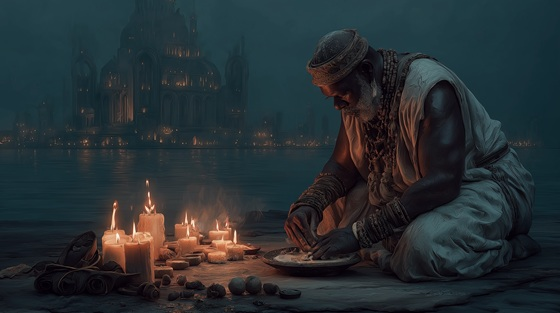

In the mythic traditions of the Dausi, Bida’s fate was not simply written in battle or blood. It was bound to a sacred object — a lute, carved from a tree known only to griots and spirits. It is said that this lute could sing prophecy, and that no lie could survive its song.
The elders warned: "When the lute plays, the truth shall fall like fire.”
The prophecy foretold that the lute’s melody would one day unravel kingship itself, exposing secrets, betrayals, and ambitions too long buried.
Bida, now grown and restless, begins to hear that music — not with his ears, but in dreams, in shadows, in the voices that return at dusk. The lute becomes a symbol of both his destiny and his doom. It is not a weapon... yet it wounds. It is not fire... yet it burns.
To the Dagomba, this tale reminds us that not all downfall comes by war — some come by song, and by the truth that music cannot hide.
The Prophecy of Bida and the Lute
In the court of fire and dream,
A blind griot sang of what would be.
No sword, no flame would carve the fall,
But string and breath would shake it all.
The lute shall weep before the crown,
And kings shall rise, and kings fall down.
Hear the chords that seal your fate,
A song too sharp, a sound too late.
When strings are plucked and truth is told,
The lion bleeds, the gods grow cold.
The lute was carved from sacred tree,
Its tone could break the line of kings.
They say it knows what man denies—
It sings of fall before the rise.
In every note, the dead still breathe,
A legacy not asked, but received.
Hear the chords that seal your fate,
A song too sharp, a sound too late.
When strings are plucked and truth is told,
The lion bleeds, the gods grow cold.
Bida heard it in his sleep,
A melody that made him weep.
He saw the throne, the broken chain—
And music carved the path to pain.
No war, no theft, no poisoned wine—
But song shall be your fatal sign.
Hear the chords that seal your fate,
A song too sharp, a sound too late.
When strings are plucked and truth is told,
The lion bleeds, the gods grow cold.
One string for fire, one for blood,
One sings of kings, one speaks the flood.
And when they echo through the trees,
The line shall end upon its knees.
So let it play, the sound so near—
The lute will sing what none will hear.
For when the note is finally heard,
The world shall tremble at the word.